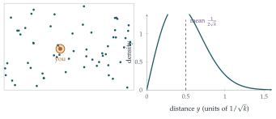

In this question, you may assume that \(\displaystyle\int_0^\infty e^{-x^2/2}\,\mathrm{d}x = \sqrt{\tfrac12\pi}\).
The number of supermarkets situated in any given region can be modelled by a Poisson random variable, where the mean is \(k\) times the area of the given region. Find the probability that there are no supermarkets within a circle of radius \(y\).
The random variable \(Y\) denotes the distance between a randomly chosen point in the region and the nearest supermarket. Write down \(\mathrm{P}(Y < y)\) and hence show that the probability density function of \(Y\) is \(2\pi yke^{-\pi ky^2}\) for \(y \geq 0\).
Find \(\mathrm{E}(Y)\) and show that \(\mathrm{Var}(Y) = \dfrac{4 - \pi}{4\pi k}\).
The hook
If supermarkets, trees, stars or mobile-phone masts are scattered “at random” across a region, how far do you have to go to the nearest one? The answer depends only on the density \(k\) (the average number per unit area), and it has a characteristic shape, the Rayleigh distribution. On average the nearest is at distance \(\frac{1}{2\sqrt k}\): with one supermarket per square kilometre, \(500\) metres.
The model is the spatial Poisson process, the two-dimensional version of random arrivals in time (Section 12.18). The calculation is short and pretty, but its real interest is as a benchmark: ecologists compare real nearest-neighbour distances with this formula to decide whether trees or nests are clustered, randomly scattered or deliberately spaced out.
Before you start
A Poisson random variable with mean \(\mu\) takes the value \(0\) with what probability?
\(\mathrm{P}(0) = e^{-\mu}\). A circle of radius \(y\) has area \(\pi y^2\), so the number of supermarkets inside it has mean \(k\pi y^2\).
Working it through
Stage 1 No supermarket nearby
The probability of no supermarket within distance \(y\) is \(e^{-\pi ky^2}\).
Stage 2 The distribution of the nearest distance
\(Y \geq y\) means there is no supermarket within distance \(y\). So what is \(\mathrm{P}(Y < y)\)?
\(\mathrm{P}(Y < y) = 1 - e^{-\pi ky^2}\), and differentiating gives the density \[\mathrm{f}(y) = 2\pi kye^{-\pi ky^2}, \qquad y \geq 0. \qed\]
Stage 3 The mean
Either integrate \(y\,\mathrm{f}(y)\) by parts, or use \(\mathrm{E}(Y) = \int_0^\infty\mathrm{P}(Y > y)\,\mathrm{d}y\). Then substitute to use the given Gaussian integral.
\[\mathrm{E}(Y) = \int_0^\infty e^{-\pi ky^2}\,\mathrm{d}y.\] Substituting \(x = y\sqrt{2\pi k}\), so that \(\pi ky^2 = \frac12x^2\), gives \(\mathrm{E}(Y) = \frac{1}{\sqrt{2\pi k}}\sqrt{\frac\pi2} = \frac{1}{2\sqrt k}\).■
Stage 4 The variance
\[\mathrm{E}(Y^2) = \int_0^\infty y^2\cdot2\pi kye^{-\pi ky^2}\,\mathrm{d}y.\] Substituting \(u = \pi ky^2\) (so \(\mathrm{d}u = 2\pi ky\,\mathrm{d}y\)), this is \(\int_0^\infty\frac{u}{\pi k}e^{-u}\,\mathrm{d}u = \frac{1}{\pi k}\). Hence \[\mathrm{Var}(Y) = \frac{1}{\pi k} - \frac{1}{4k} = \frac{4 - \pi}{4\pi k}. \qed\]

Looking back
Turn a distance question into a counting question. “The nearest is further than \(y\)” is “there are none within \(y\)”.
Cumulative first, density second. \(\mathrm{P}(Y < y)\) came directly; differentiating gave the density.
Substitutions to known integrals. Each moment reduced to the Gaussian integral or the exponential integral.
What’s really going on
The Poisson process in the plane
A spatial Poisson process with intensity \(k\) is a random scatter of points such that the numbers in disjoint regions are independent, and the number in a region of area \(A\) is Poisson with mean \(kA\). It is what you get from dropping a huge number of points independently and uniformly over a huge area, with the right average density: the “law of rare events” that also explains derangements (Section 9.8). It is the natural model of complete spatial randomness, and real patterns are judged against it. The Clark–Evans test, devised by two ecologists in 1954, compares the observed mean nearest-neighbour distance with \(\frac{1}{2\sqrt k}\): much smaller suggests clustering (seeds falling near their parent tree), much larger suggests regular spacing (territorial birds, or competition between plants for water).
In three dimensions
The same calculation in three dimensions gives \(\mathrm{P}(Y > y) = e^{-\frac43\pi ky^3}\) for the distance to the nearest star, molecule or galaxy. Subrahmanyan Chandrasekhar used it in 1943 to study the gravitational forces on a star from its random neighbours, and physicists use it for the mean free path of molecules in a gas.
The density \(\frac{y}{\sigma^2}e^{-y^2/(2\sigma^2)}\) is named after Lord Rayleigh, who met it in 1880 in the theory of sound: it describes the amplitude of the sum of many waves with random phases. It also gives the distance from the origin of a point whose two coordinates are independent normal random variables, which is another way to see why it appears here (exercise 3). Today it models the fading of mobile-phone signals, which reach the receiver along many paths with random phases.
The thinking skill
For the distribution of a minimum, a maximum or a nearest distance, \(\mathrm{P}(Y > y)\) is often easy to write down directly. Differentiate to get the density.
This approach recurs in Section 12.25, for the largest of many random lifetimes. At university it is the standard first step for any “order statistic”.
Try this next
The median. Find the median distance to the nearest supermarket, and compare it with the mean.
The second nearest. Find the distribution of the distance to the second nearest supermarket. (Hint: \(\mathrm{P}(Y_2 > y)\) is the probability of at most one supermarket within \(y\).)
Normal coordinates. If \(U\) and \(V\) are independent \(\mathrm{N}(0, \sigma^2)\), show that \(\sqrt{U^2 + V^2}\) has density \(\frac{r}{\sigma^2}e^{-r^2/(2\sigma^2)}\). Which value of \(\sigma\) gives the supermarket distribution?
Clark–Evans. In a survey of a \(1\) km\(^2\) wood containing \(400\) trees, the mean distance from a tree to its nearest neighbour is \(35\) m. Is this consistent with complete spatial randomness, or does it suggest clustering or spacing?
Further reading
Peter Diggle, Statistical Analysis of Spatial Point Patterns (Arnold). The standard reference, with the Clark–Evans test and its successors.
John Kingman, Poisson Processes (Oxford University Press). A beautiful short book on Poisson processes in any number of dimensions.
Geoffrey Grimmett & David Stirzaker, Probability and Random Processes (Oxford University Press), the chapter on the Poisson process.